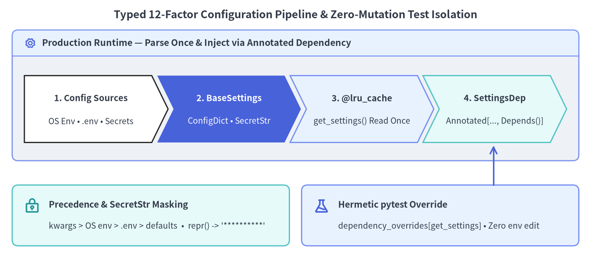
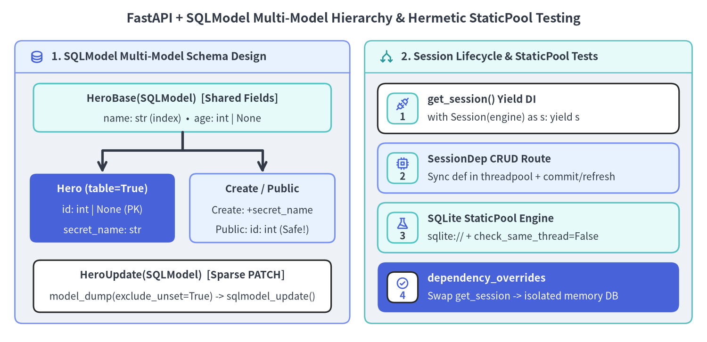

pydantic-settings & SQL Databases
FastAPI v0.162.2 pairs typed 12-Factor environment configuration (pydantic-settings with @lru_cache dependency caching) and unified relational ORM/schema models (SQLModel with per-request yield sessions) so external infrastructure remains 100% swappable in tests via app.dependency_overrides.

1. Typed 12-Factor Configuration with pydantic-settings
Hardcoding URLs or scattering untyped os.getenv() calls across modules hides missing environment variables until a cold code path executes in production. Installing fastapi[standard] includes pydantic-settings >=2.0.0, allowing your application to validate environment variables, .env files, and mounted secret files through the exact same Rust-backed Pydantic v2 engine used for HTTP request bodies.
Source Precedence, SettingsConfigDict & SecretStr
When BaseSettings initializes, it merges configuration sources in strict priority order so explicit test keyword arguments and container environment variables always win over local developer .env files:
| Priority | Configuration Source | Typical Operational Usage |
|---|---|---|
| 1 (Highest) | Explicit __init__ keyword arguments |
Settings(app_name="Test API") inside pytest dependency overrides |
| 2 | OS Environment Variables (os.environ) |
Kubernetes ConfigMap / Secret env vars & Cloud Run runtime config |
| 3 | .env dotenv file (env_file=".env") |
Local developer workstation defaults (excluded via .gitignore) |
| 4 | Mounted secret directory (secrets_dir) |
Container secret volume mounts (secrets_dir="/run/secrets") |
| 5 (Lowest) | Class field default values | Safe non-sensitive defaults (items_per_user: int = 50) |
Two defensive rules eliminate configuration leaks and startup crashes in shared environments:
- Configure
SettingsConfigDict(env_file=".env", extra="ignore"): Local developer.envfiles frequently contain auxiliary variables for Docker Compose or frontend tooling. Settingextra="ignore"prevents unrelated keys from raising aValidationErroron boot. - Wrap Credentials in
SecretStr: Storing API keys, database passwords, or webhook signing keys asSecretStrredacts them to'**********'wheneverSettingsis formatted into logs, tracebacks, or structured telemetry, requiring explicit.get_secret_value()access at the call site.
Why @lru_cache + Depends() Beats Module Globals
Instantiating settings = Settings() at module import time forces every test module that imports app.main to have production environment variables present immediately, and makes parallel pytest-xdist tests race if they mutate os.environ.
Wrapping Settings() in @lru_cache def get_settings() -> Settings: and injecting SettingsDep = Annotated[Settings, Depends(get_settings)] gives you the best of both worlds (extending the Dependant DAG & Caching pattern):
- Parsed Once in Production:
@lru_cachereads.envfrom disk and runs Pydantic validation only on the first call, serving subsequent requests from memory in nanoseconds. - Zero-Env-Mutation Test Isolation: Tests replace
app.dependency_overrides[get_settings]with a function returningSettings(...)directly via constructor arguments—never touching.envoros.environ(and callingget_settings.cache_clear()only if testingget_settingsitself).
from functools import lru_cache
from typing import Annotated
from fastapi import Depends, FastAPI
from fastapi.testclient import TestClient
from pydantic import SecretStr
from pydantic_settings import BaseSettings, SettingsConfigDict
class Settings(BaseSettings):
app_name: str = "Billing Ledger API"
admin_email: str = "ops@example.com"
items_per_user: int = 50
webhook_signing_secret: SecretStr = SecretStr("whsec_dev_placeholder")
model_config = SettingsConfigDict(
env_file=".env",
env_file_encoding="utf-8",
extra="ignore",
)
@lru_cache
def get_settings() -> Settings:
return Settings()
SettingsDep = Annotated[Settings, Depends(get_settings)]
app = FastAPI(title="Settings Demo")
@app.get("/info")
def read_service_info(settings: SettingsDep) -> dict[str, str | int | bool]:
return {
"app_name": settings.app_name,
"admin_email": settings.admin_email,
"items_per_user": settings.items_per_user,
"masked_repr": str(settings.webhook_signing_secret),
"has_signing_key": len(settings.webhook_signing_secret.get_secret_value()) > 0,
}
def test_settings_dependency_override_isolation() -> None:
def get_settings_override() -> Settings:
return Settings(
app_name="Test Billing API",
admin_email="ci-test@example.com",
webhook_signing_secret=SecretStr("whsec_test_isolated_key"),
)
app.dependency_overrides[get_settings] = get_settings_override
try:
with TestClient(app) as client:
res = client.get("/info")
assert res.status_code == 200
assert res.json() == {
"app_name": "Test Billing API",
"admin_email": "ci-test@example.com",
"items_per_user": 50,
"masked_repr": "**********",
"has_signing_key": True,
}
finally:
app.dependency_overrides.clear()
2. Relational Persistence & Hermetic Testing with SQLModel
Created by the author of FastAPI (@tiangolo), SQLModel unifies SQLAlchemy 2.0 and Pydantic v2 under a single class hierarchy so database table definitions and HTTP validation schemas share field types, constraints, and editor autocomplete without duplicating boilerplate.

The 4-Model SQLModel Pattern (Preventing Leaks & Nullable IDs)
Exposing a single table=True ORM model directly in request and response signatures introduces three classic API flaws: clients can spoof primary keys on POST, internal columns (secret_name, password hashes) leak in JSON responses, and generated TypeScript SDKs mark id as int | null even though persisted rows always have an integer id.
Splitting responsibilities across four lightweight SQLModel classes eliminates all three flaws while keeping OpenAPI 3.1 response serialization exact:
HeroBase(SQLModel): Declares shared validated columns (name,age) once withtable=False(the default).Hero(HeroBase, table=True): Represents the physical SQL table (id: int | None = Field(default=None, primary_key=True)becauseidisNonein Python until the database assigns it onsession.commit(), plus server-only columns likesecret_name).HeroCreate(HeroBase)&HeroPublic(HeroBase): Pure Pydantic data schemas (table=False).HeroCreateacceptssecret_nameon input without allowingidinjection;HeroPublicdeclaresid: int(strictly non-null in OpenAPI!) and omitssecret_nameso sensitive columns are stripped automatically during Rust response serialization.HeroUpdate(SQLModel): Declares all mutable fields as optional (Nonedefaults) soPATCHhandlers can callhero.model_dump(exclude_unset=True)and apply sparse updates cleanly withhero_db.sqlmodel_update(hero_data).
Per-Request Session Lifecycle & StaticPool SQLite Testing
Database sessions hold stateful identity maps and open transactions, so never share a Session globally across requests. Instead, yield a fresh Session(engine) per request via SessionDep = Annotated[Session, Depends(get_session)], declaring synchronous SQLModel endpoints with standard def so FastAPI executes blocking SQL I/O safely on its worker threadpool.
When testing SQLModel endpoints against an in-memory SQLite database (sqlite://), two engine options are mandatory:
poolclass=StaticPool: By default, SQLite opens an empty, isolated in-memory database for every new connection checkout.StaticPoolreuses a single underlying connection across the fixture setup (SQLModel.metadata.create_all(engine)) and allTestClientrequests within that test.connect_args={"check_same_thread": False}: Becausepytestinitializes tables on the main thread while FastAPI dispatches synchronousdefroutes in a worker threadpool thread,check_same_thread=Falseallows SQLite to safely cross that thread boundary during a single request cycle.
from collections.abc import Generator
from typing import Annotated
from fastapi import Depends, FastAPI, HTTPException, Query
from fastapi.testclient import TestClient
import pytest
from sqlmodel import Field, Session, SQLModel, create_engine, select
from sqlmodel.pool import StaticPool
class HeroBase(SQLModel):
name: str = Field(index=True, min_length=1, max_length=80)
age: int | None = Field(default=None, ge=0, le=300, index=True)
class Hero(HeroBase, table=True):
id: int | None = Field(default=None, primary_key=True)
secret_name: str
class HeroCreate(HeroBase):
secret_name: str
class HeroPublic(HeroBase):
id: int
class HeroUpdate(SQLModel):
name: str | None = Field(default=None, min_length=1, max_length=80)
age: int | None = Field(default=None, ge=0, le=300)
secret_name: str | None = None
prod_engine = create_engine(
"sqlite:///./database.db",
connect_args={"check_same_thread": False},
)
def get_session() -> Generator[Session, None, None]:
with Session(prod_engine) as session:
yield session
SessionDep = Annotated[Session, Depends(get_session)]
app = FastAPI(title="SQLModel Heroes API")
@app.post("/heroes/", response_model=HeroPublic, status_code=201)
def create_hero(hero: HeroCreate, session: SessionDep) -> Hero:
db_hero = Hero.model_validate(hero)
session.add(db_hero)
session.commit()
session.refresh(db_hero)
return db_hero
@app.get("/heroes/", response_model=list[HeroPublic])
def read_heroes(
session: SessionDep,
offset: Annotated[int, Query(ge=0)] = 0,
limit: Annotated[int, Query(ge=1, le=100)] = 100,
) -> list[Hero]:
statement = select(Hero).offset(offset).limit(limit)
return list(session.exec(statement).all())
@app.patch("/heroes/{hero_id}", response_model=HeroPublic)
def update_hero(hero_id: int, hero: HeroUpdate, session: SessionDep) -> Hero:
hero_db = session.get(Hero, hero_id)
if not hero_db:
raise HTTPException(status_code=404, detail="Hero not found")
hero_data = hero.model_dump(exclude_unset=True)
hero_db.sqlmodel_update(hero_data)
session.add(hero_db)
session.commit()
session.refresh(hero_db)
return hero_db
@app.delete("/heroes/{hero_id}")
def delete_hero(hero_id: int, session: SessionDep) -> dict[str, bool]:
hero_db = session.get(Hero, hero_id)
if not hero_db:
raise HTTPException(status_code=404, detail="Hero not found")
session.delete(hero_db)
session.commit()
return {"ok": True}
@pytest.fixture(name="session")
def session_fixture() -> Generator[Session, None, None]:
engine = create_engine(
"sqlite://",
connect_args={"check_same_thread": False},
poolclass=StaticPool,
)
SQLModel.metadata.create_all(engine)
with Session(engine) as session:
yield session
@pytest.fixture(name="client")
def client_fixture(session: Session) -> Generator[TestClient, None, None]:
def get_session_override() -> Session:
return session
app.dependency_overrides[get_session] = get_session_override
try:
with TestClient(app) as client:
yield client
finally:
app.dependency_overrides.clear()
def test_sqlmodel_crud_and_secret_filtering(client: TestClient) -> None:
created = client.post(
"/heroes/",
json={"name": "Deadpond", "age": 34, "secret_name": "Dive Wilson"},
)
assert created.status_code == 201
assert created.json() == {"id": 1, "name": "Deadpond", "age": 34}
patched = client.patch("/heroes/1", json={"age": 35})
assert patched.status_code == 200
assert patched.json() == {"id": 1, "name": "Deadpond", "age": 35}
listed = client.get("/heroes/?offset=0&limit=10")
assert listed.json() == [{"id": 1, "name": "Deadpond", "age": 35}]
assert client.delete("/heroes/1").json() == {"ok": True}
assert client.patch("/heroes/1", json={"age": 36}).status_code == 404
Continue to FastAPI CLI, Proxies, GraphQL & AI to explore fastapi dev / fastapi run, reverse proxy --root-path configuration, Strawberry GraphQL routers, and AI-assisted development with library-skills.